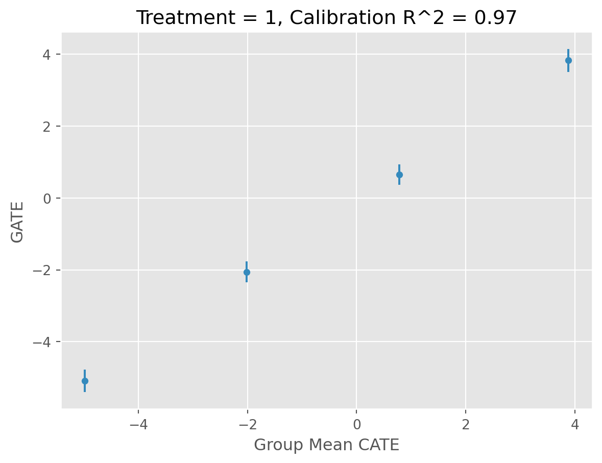
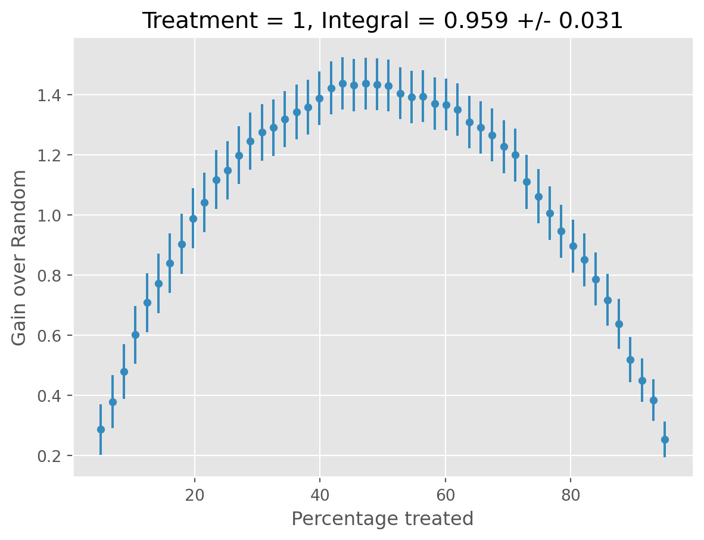
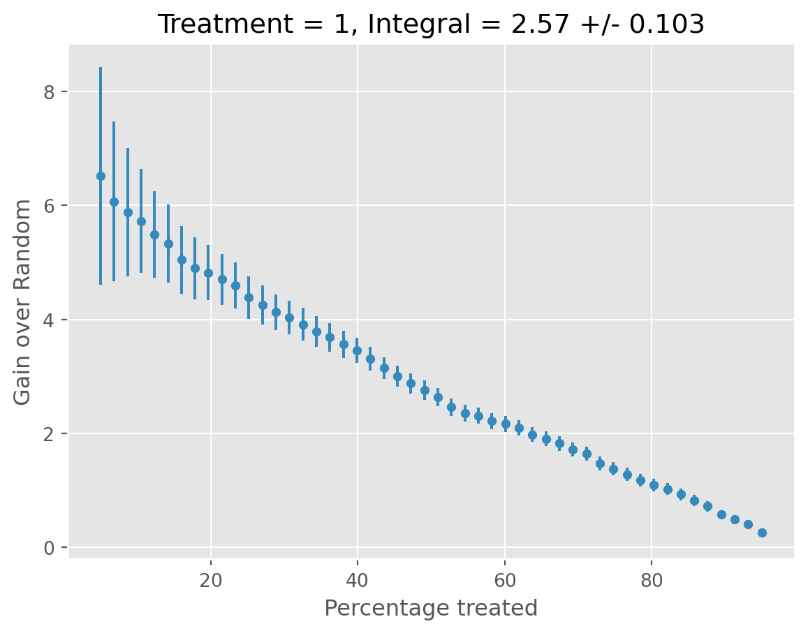
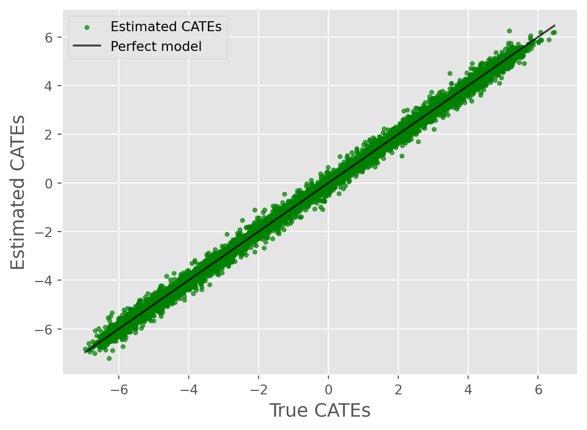
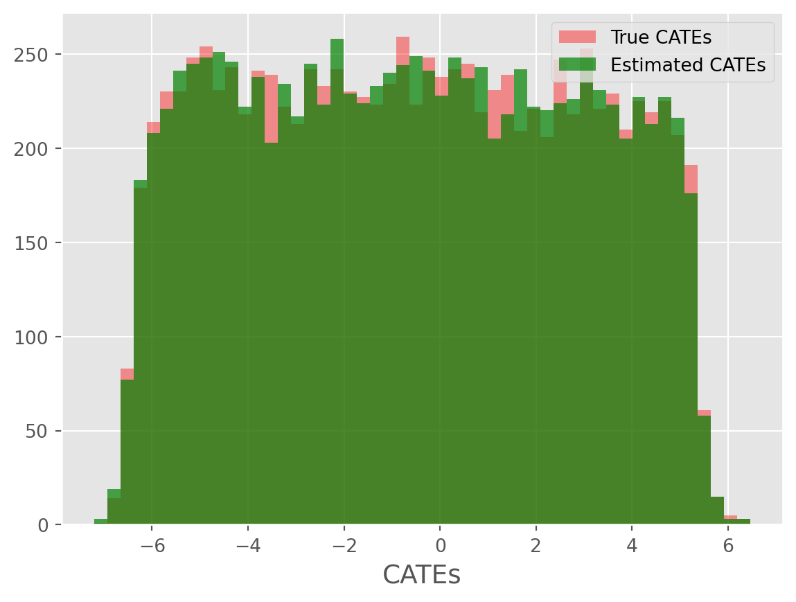
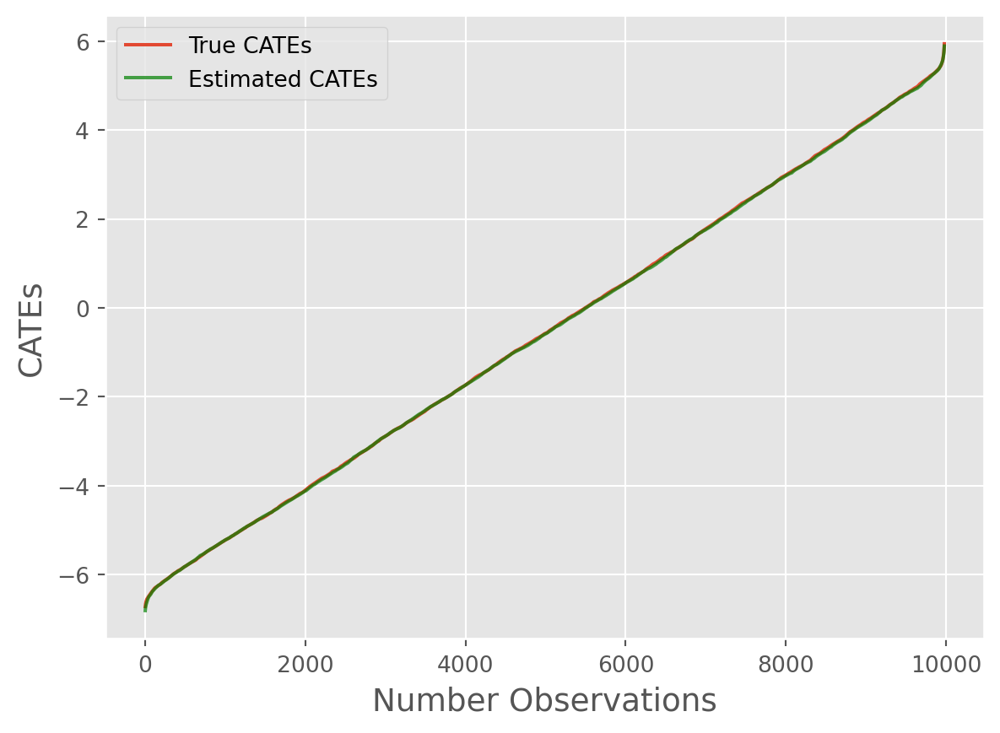

from caml.logging import configure_logging
import logging
configure_logging(level=logging.DEBUG)[06/26/25 14:09:29] DEBUG Logging configured with level: DEBUG logging.py:70
Here we’ll walk through an example of generating synthetic data, running CamlCATE, and visualizing results using the ground truth as reference.
CamlCATE is particularly useful when highly accurate CATE estimation is of primary interest in the presence of exogenous treatment, simple linear confounding, or complex non-linear confounding exists.
CamlCATE enables the use of various CATE models with varying assumptions on functional form of treatment effects & heterogeneity. When a set of CATE models are considered, the final CATE model is automatically selected is based on validation set performance.
Here we’ll leverage the SyntheticDataGenerator class to generate a linear synthetic data generating process, with a binary treatment, continuous outcome, and a mix of confounding/mediating continuous covariates.
[06/26/25 14:09:29] DEBUG Logging configured with level: DEBUG logging.py:70
from caml.extensions.synthetic_data import SyntheticDataGenerator
data_generator = SyntheticDataGenerator(
n_obs=10_000,
n_cont_outcomes=1,
n_binary_treatments=1,
n_cont_confounders=2,
n_cont_modifiers=2,
n_confounding_modifiers=1,
causal_model_functional_form="linear",
seed=10,
)WARNING SyntheticDataGenerator is experimental and may change in future generics.py:44 versions.
We can print our simulated data via:
| W1_continuous | W2_continuous | X1_continuous | X2_continuous | T1_binary | Y1_continuous | |
|---|---|---|---|---|---|---|
| 0 | 0.354380 | -3.252276 | 2.715662 | -3.578800 | 1 | 11.880305 |
| 1 | 0.568499 | 2.484069 | -6.402235 | -2.611815 | 0 | -32.292141 |
| 2 | 0.162715 | 8.842902 | 1.288770 | -3.788545 | 1 | -48.696391 |
| 3 | 0.362944 | -0.959538 | 1.080988 | -3.542550 | 0 | -1.899468 |
| 4 | 0.612101 | 1.417536 | 4.143630 | -4.112453 | 1 | -7.315334 |
| ... | ... | ... | ... | ... | ... | ... |
| 9995 | 0.340436 | 0.241095 | -6.524222 | -3.188783 | 1 | -27.578609 |
| 9996 | 0.019523 | 1.338152 | -2.555492 | -3.643733 | 1 | -19.692436 |
| 9997 | 0.325401 | 1.258659 | -3.340546 | -4.255203 | 1 | -26.087316 |
| 9998 | 0.586715 | 1.263264 | -2.826709 | -4.149383 | 1 | -25.876331 |
| 9999 | 0.003002 | 6.723381 | 1.260782 | -3.660600 | 1 | -38.200522 |
10000 rows × 6 columns
To inspect our true data generating process, we can call data_generator.dgp. Furthermore, we will have our true CATEs and ATEs at our disposal via data_generator.cates & data_generator.ates, respectively. We’ll use this as our source of truth for performance evaluation of our CATE estimator.
DGP for T1_binary:
{'formula': '1 + W1_continuous + W2_continuous + X1_continuous', 'params': array([ 0.4609703 , 0.2566887 , -0.03896251, 0.07238272]), 'noise': array([-0.51949108, -1.88624383, 0.86927397, ..., 0.87157749,
0.0697439 , -0.72616319]), 'raw_scores': array([0.58800598, 0.13710535, 0.75412862, ..., 0.7549587 , 0.60527474,
0.39290362]), 'function': <function SyntheticDataGenerator._create_dgp_function.<locals>.f_binary at 0x7f50003b16c0>}
DGP for Y1_continuous:
{'formula': '1 + W1_continuous + W2_continuous + X1_continuous + X2_continuous + T1_binary + T1_binary*X1_continuous + T1_binary*X2_continuous', 'params': array([ 1.11129512, -4.1263484 , -4.82709212, 1.87319625, 2.60635605,
-0.91633948, 0.71653213, -0.25067306]), 'noise': array([-1.15370094, -0.26681987, 0.05261899, ..., -0.18887322,
-0.45736583, -0.57057603]), 'raw_scores': array([ 11.88030508, -32.29214063, -48.69639077, ..., -26.0873159 ,
-25.87633114, -38.20052217]), 'function': <function SyntheticDataGenerator._create_dgp_function.<locals>.f_cont at 0x7f4ffffac280>}| CATE_of_T1_binary_on_Y1_continuous | |
|---|---|
| 0 | 1.926628 |
| 1 | -4.849035 |
| 2 | 0.956792 |
| 3 | 0.746245 |
| 4 | 3.083586 |
| ... | ... |
| 9995 | -4.791812 |
| 9996 | -1.834046 |
| 9997 | -2.243283 |
| 9998 | -1.901629 |
| 9999 | 0.904665 |
10000 rows × 1 columns
We can instantiate and observe our CamlCATE object via:
W can be leveraged if we want to use certain covariates only in our nuisance functions to control for confounding and not in the final CATE estimator. This can be useful if a confounder may be required to include, but for compliance reasons, we don’t want our CATE model to leverage this feature (e.g., gender). However, this will restrict our available CATE estimators to orthogonal learners, since metalearners necessarily include all covariates. If you don’t care about W being in the final CATE estimator, pass it as X, as done below.
from caml import CamlCATE
caml_obj = CamlCATE(
df=data_generator.df,
Y="Y1_continuous",
T="T1_binary",
X=[c for c in data_generator.df.columns if "X" in c]
+ [c for c in data_generator.df.columns if "W" in c],
discrete_treatment=True,
discrete_outcome=False,
)WARNING CamlCATE is experimental and may change in future versions. generics.py:44
================== CamlCATE Object ==================
Data Backend: pandas
No. of Observations: 10,000
Outcome Variable: Y1_continuous
Discrete Outcome: False
Treatment Variable: T1_binary
Discrete Treatment: True
Features/Confounders for Heterogeneity (X): ['X1_continuous', 'X2_continuous', 'W1_continuous', 'W2_continuous']
Features/Confounders as Controls (W): []
Random Seed: None
We can then obtain our nuisance functions / regression & propensity models via Flaml AutoML:
ExtraTreesRegressor(max_features=0.9924623662362855, max_leaf_nodes=3267,
n_estimators=140, n_jobs=-1, random_state=12032022)
ExtraTreesRegressor(max_features=0.9924623662362855, max_leaf_nodes=3267,
n_estimators=140, n_jobs=-1, random_state=12032022)
XGBClassifier(base_score=None, booster=None, callbacks=[],
colsample_bylevel=0.9366334928584987, colsample_bynode=None,
colsample_bytree=0.7801788111200721, device=None,
early_stopping_rounds=None, enable_categorical=False,
eval_metric=None, feature_types=None, gamma=None,
grow_policy=None, importance_type=None,
interaction_constraints=None, learning_rate=0.42324459351542365,
max_bin=None, max_cat_threshold=None, max_cat_to_onehot=None,
max_delta_step=None, max_depth=1, max_leaves=None,
min_child_weight=77.88614459419128, missing=nan,
monotone_constraints=None, multi_strategy=None, n_estimators=14,
n_jobs=-1, num_parallel_tree=None, random_state=None, ...)Now that we have obtained our first-stage models, we can fit our CATE estimators via:
The selected model defaults to the one with the highest RScore. All fitted models are still accessible via the cate_estimators attribute and if you want to change default estimator, you can run caml_obj._validation_estimator = {different_model}.
🚀Forthcoming: Additional scoring techniques & AutoML for CATE estimators is on our roadmap.
caml_obj.fit_validator(
cate_estimators=[
"LinearDML",
"CausalForestDML",
"ForestDRLearner",
"LinearDRLearner",
"DomainAdaptationLearner",
"SLearner",
"TLearner",
"XLearner",
],
validation_size=0.2,
test_size=0.2,
n_jobs=-1,
)INFO Estimator RScores: {'LinearDML': 0.4238559610152759, 'CausalForestDML': cate.py:853 0.42360605775749216, 'ForestDRLearner': 0.42512145369888554, 'LinearDRLearner': 0.4242228121860917, 'DomainAdaptationLearner': 0.3977816934231625, 'SLearner': 0.39765837657360315, 'TLearner': 0.3704873418026987, 'XLearner': 0.4204625306742942}
[('LinearDML', <econml.dml.dml.LinearDML at 0x7f4fff50e380>),
('CausalForestDML',
<econml.dml.causal_forest.CausalForestDML at 0x7f4fff59d2a0>),
('ForestDRLearner', <econml.dr._drlearner.ForestDRLearner at 0x7f4ffffc2b30>),
('LinearDRLearner', <econml.dr._drlearner.LinearDRLearner at 0x7f4ffffc3400>),
('DomainAdaptationLearner',
<econml.metalearners._metalearners.DomainAdaptationLearner at 0x7f502694c160>),
('SLearner', <econml.metalearners._metalearners.SLearner at 0x7f4ffc4c5030>),
('TLearner', <econml.metalearners._metalearners.TLearner at 0x7f4ffffc39a0>),
('XLearner', <econml.metalearners._metalearners.XLearner at 0x7f4ffffc0670>)]Here we can validate our model on the test hold out set. Currently, this is only available for when continuous outcomes and binary treatments exist.
[06/26/25 14:11:23] INFO All validation results suggest that the model has found statistically cate.py:497 significant heterogeneity.
treatment blp_est blp_se blp_pval qini_est qini_se qini_pval autoc_est autoc_se autoc_pval cal_r_squared
0 1 0.976 0.02 0.0 0.958 0.028 0.0 2.58 0.089 0.0 0.948


Now that we have selected our top performer and validated results on the test set, we can fit our final model on the entire dataset.
First, we will obtain our predictions.
We’ll use the summarize() method after obtaining our predictions above, where our the displayed mean represents our Average Treatment Effect (ATE).
| cate_predictions_0_1 | |
|---|---|
| count | 10000.000000 |
| mean | -0.576649 |
| std | 3.364999 |
| min | -6.681288 |
| 25% | -3.546351 |
| 50% | -0.631965 |
| 75% | 2.229679 |
| max | 6.266488 |
Now comparing this to our ground truth, we see the model performed well the true ATE:
Now we want to see how the estimator performed in modeling the true CATEs.
First, we can simply compute the Precision in Estimating Heterogeneous Effects (PEHE), which is simply the Root Mean Squared Error (RMSE):
from sklearn.metrics import root_mean_squared_error
true_cates = data_generator.cates.iloc[:, 0]
root_mean_squared_error(true_cates, cate_predictions)0.27164854729411225Not bad! Now let’s use some visualization techniques:
from caml.extensions.plots import cate_true_vs_estimated_plot
cate_true_vs_estimated_plot(
true_cates=true_cates, estimated_cates=cate_predictions
)
from caml.extensions.plots import cate_histogram_plot
cate_histogram_plot(true_cates=true_cates, estimated_cates=cate_predictions)
from caml.extensions.plots import cate_line_plot
cate_line_plot(
true_cates=true_cates, estimated_cates=cate_predictions, window=20
)
Overall, we can see the model performed remarkably well!~
In many production settings, we will want to store our model, information on the features used, etc. We provide attributes that to pull key information (more to be added later as class evolves)
Grabbing final model object:
Grabbing input features:
{'feature_names': ['X1_continuous',
'X2_continuous',
'W1_continuous',
'W2_continuous'],
'output_names': 'Y1_continuous',
'treatment_names': 'T1_binary'}Grabbing all fitted CATE estimators:
[('LinearDML', <econml.dml.dml.LinearDML at 0x7f4fff50e380>),
('CausalForestDML',
<econml.dml.causal_forest.CausalForestDML at 0x7f4fff59d2a0>),
('ForestDRLearner', <econml.dr._drlearner.ForestDRLearner at 0x7f4ffffc2b30>),
('LinearDRLearner', <econml.dr._drlearner.LinearDRLearner at 0x7f4ffffc3400>),
('DomainAdaptationLearner',
<econml.metalearners._metalearners.DomainAdaptationLearner at 0x7f502694c160>),
('SLearner', <econml.metalearners._metalearners.SLearner at 0x7f4ffc4c5030>),
('TLearner', <econml.metalearners._metalearners.TLearner at 0x7f4ffffc39a0>),
('XLearner', <econml.metalearners._metalearners.XLearner at 0x7f4ffffc0670>)]